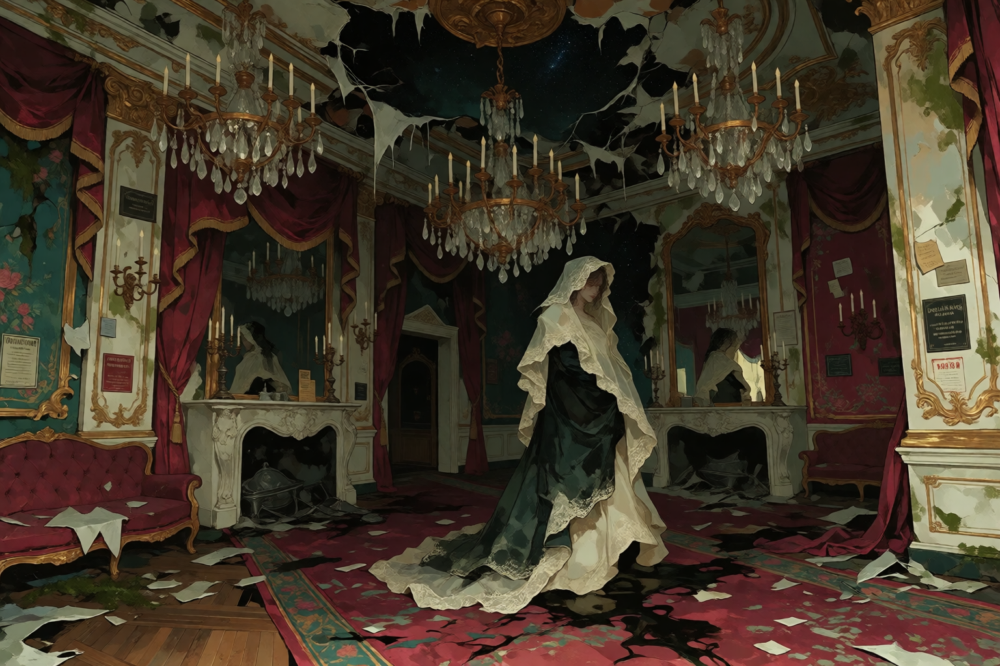

STILL OPEN
OLD BUILDINGS, CURRENT PROBLEMS.
Schools, clinics, offices, clubs and other institutions occupy buildings that were never designed for the way people use them now.

SAINT JUDE'S LANDING / DISTRICT 04
Old houses. Old money. Old institutions. Old businesses. Old families. Most of them never actually left.
BEAUTIFUL THINGS CAN STILL BE FUCKED UP.
Velvet is what happens when old wealth survives long enough to become part of the infrastructure.
Mansions became apartments. Estates became institutions. Family businesses became businesses that somehow still have the same family name painted above the door.
Expensive buildings rot here just like everything else. The difference is that somebody usually has enough money to keep the roof from completely collapsing.
Velvet is not abandoned. It is inhabited.

There are restaurants, schools, tailors, mechanics, private clubs, funeral homes, antique shops, lawyers, doctors, landscapers and stores that have been selling the same strange shit for generations.
People walk to work. Kids get yelled at. Somebody is always fixing a pipe. Somebody else is always trying to sell a house that has been in their family for two hundred years.
The district looks expensive until somebody notices the water stains.
Everything looks like it costs too much money to touch.

EXPENSIVE DECAY
Velvet's interiors were built to impress people who had money, lineage, servants, architects and enough spare rooms to lose track of entire generations.
Now there is mold behind the wallpaper. The carpets smell damp. Chandeliers hang crooked. Somebody has put a television on top of furniture that was apparently worth more than the house next door.
Some families renovated. Some refused. Some stopped noticing.

OLD ROOMS
Fresh flowers appear in certain ballrooms even when nobody remembers who ordered them.
Offerings show up on side tables. Plates disappear. Candles get replaced. Somebody always knows where the spare key is.
Nobody agrees on who started doing it.
The flowers are usually fresh.
ESTATES / BACK LOTS / DEAD GARDENS
Old gardens swallowed themselves years ago.
Hedges grow through walls. Tree roots break stone paths. Statues disappear under moss. Decorative ponds become black water full of things nobody remembers putting there.
Some of the gardens are beautiful.
That's usually when people should start worrying.

THE OLD STUFF STILL WORKS
Velvet is full of buildings that were important before anyone alive now was born. Some of them are still doing the exact same job.
Schools, clinics, offices, clubs and other institutions occupy buildings that were never designed for the way people use them now.

Shops survive through inheritance, stubbornness, debt, luck and the occasional thing nobody wants to ask about.


DINNER
There are twelve places set at the table.
There are eleven chairs.
Nobody thinks this is unusual.
Dinner still happens. Somebody complains about the food. Somebody drinks too much. Somebody leaves early. The flowers get replaced.
The missing chair has never been found.
FAMILY CUSTOM
In Velvet, supernatural shit has a tendency to become ordinary family custom.
There are locked rooms with offerings inside. There are ceremonies that happen on schedules nobody remembers establishing. There are staircases that do not appear on the architect's plans.
One family has performed the same ceremony every thirteen years.
Another keeps a beautiful thing in a room nobody enters alone.
The district has been here for a very long time. So have some of its guests.


BEAUTIFUL. PROBABLY.
It looks almost human.
Old formal clothing. Polite posture. Familiar faces. A smile that looks perfectly normal until it doesn't.
It does not blink.
Nobody seems particularly interested in discussing what it is.
Velvet has never been especially good at agreeing on what counts as a problem.

THE HOUSE
The staircase has apparently been there for at least six years.
The architect's plans do not show it.
The previous owner does not remember building it.
The neighbors say there has always been another staircase.
Nobody considers this a problem.

OUTLIER / MOTHBALL
Doll comes from Mothball, which physically sits inside Velvet.
She knows the old houses, the businesses, the shortcuts, the people who leave their doors unlocked and the people who absolutely should not.
Her battered embroidered handbag has survived worse things than anything Velvet can throw at her.
She looks at a mansion the way somebody else might look at a parking ticket.
OPEN DOLL →
ENCLAVE / NOT A DISTRICT
Narrow storefronts. Cramped alleys. Upper floors packed with inventory. Basements used for storage.
Furniture, clothes, jewelry, tools, books, religious objects, broken machines, stolen goods, Behemoth materials and unidentified things all move through the market.
Mothball is not a separate district.
MANSION → STOREFRONT → ALLEY → BASEMENT → WHO THE FUCK KNOWS.
ENTER MOTHBALL →


STILL OPEN
The city keeps changing.
Velvet mostly keeps pretending it hasn't.
The carpets get replaced. The wallpaper gets painted over. Somebody inherits another house. Somebody opens another restaurant. Somebody finds another room.
The old families keep having dinner.
AND SOMEWHERE IN THE HOUSE, SOMETHING IS STILL WAITING FOR DINNER.